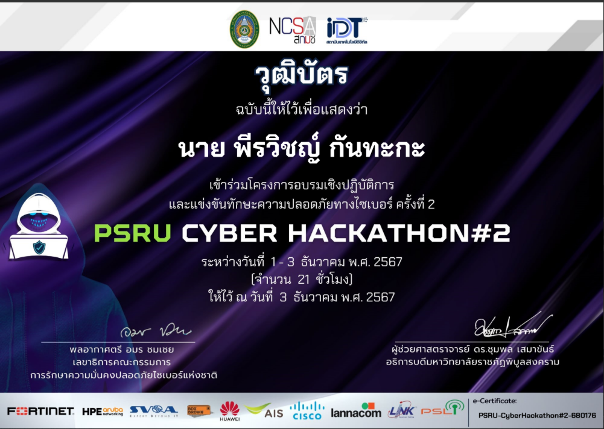

โปรเจกต์
ทดสอบแอปฯ 'เที่ยวชุมชน' (Manual & Auto)
โปรเจกต์ทดสอบแอปพลิเคชัน 'เที่ยวชุมชน' เพื่อหาข้อผิดพลาดและรับประกันคุณภาพของซอฟต์แวร์
ทดสอบแอปฯ PSRU Bus (Prompt Go)
โปรเจกต์ทดสอบแอปพลิเคชันติดตามตำแหน่งรถรางของมหาวิทยาลัยฯ แบบอัตโนมัติ
กิจกรรม

กิจกรรมอบรมแอปฯ 'เที่ยวชุมชน'
เข้าร่วมกิจกรรมอบรมถ่ายทอดความรู้การใช้งานแอปพลิเคชันท่องเที่ยวชุมชนให้กับผู้ใช้งานในพื้นที่ จ.สุโขทัย
ทัศนศึกษา AUTOMATION EXPO 2025
เข้าร่วมทัศนศึกษาเพื่องาน 'AUTOMATION EXPO 2025' และ 'EEC Automation Park' ที่ ม.บูรพา
เกียรติบัตร

เกียรติบัตรการเข้าร่วม
ได้รับจาก: AIS

หลักสูตรความปลอดภัยทางไซเบอร์
ได้รับจาก: มหาวิทยาลัยราชภัฏพิบูลสงคราม

ความฉลาดรู้ทางดิจิทัล
ได้รับจาก: มหาวิทยาลัยราชภัฏพิบูลสงคราม

การแข่งขัน Hackathon #2
ได้รับจาก: มหาวิทยาลัยราชภัฏพิบูลสงคราม
ความรู้เบื้องต้นเกี่ยวกับ IoT
ได้รับจาก: มหาวิทยาลัยราชภัฏพิบูลสงคราม
การพัฒนาทักษะ Docker
ได้รับจาก: มหาวิทยาลัยราชภัฏพิบูลสงคราม
PCAP: การเขียนโปรแกรมด้วย Python
ได้รับจาก: Cisco Networking Academy

การประเมินความฉลาดรู้ทางดิจิทัล
ได้รับจาก: มหาวิทยาลัยราชภัฏพิบูลสงคราม

พื้นฐานความปลอดภัยทางไซเบอร์
ได้รับจาก: MOOC

ทักษะการทดสอบซอฟต์แวร์
ได้รับจาก: มหาวิทยาลัยราชภัฏพิบูลสงคราม
Fortinet Network Security Expert
ได้รับจาก: Fortinet